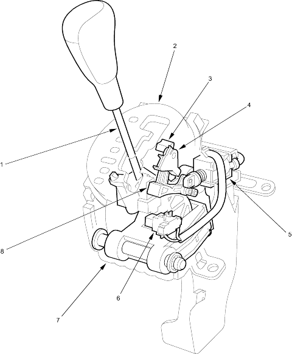

Automatic Transmission
System Description (cont'd)
|
14-59 |
|
Shift Lever Mechanism
The shift lever has 7 positions:  ,
,  ,
,  ,
,  ,
,  ,
,  and
and  and shifts between positions along the gate in the A/T gear position indicator panel. The shift lever can shift out of position and into position from without pressing or pulling the shift lever. The shift lock/reverse lock mechanism is an additional shift lever lockout mechanism. The shift lever sifts the transmission into , , , , and positions using the shift cable connected between the shift lever and the transmission control shaft. When the shift lever shifts into position, the shift lever is moved to the next position from and it pushes the D3 switch to turn ON. Then the transmission shifts into D3 position mode, but the shifting position in the transmission is held in position.
and shifts between positions along the gate in the A/T gear position indicator panel. The shift lever can shift out of position and into position from without pressing or pulling the shift lever. The shift lock/reverse lock mechanism is an additional shift lever lockout mechanism. The shift lever sifts the transmission into , , , , and positions using the shift cable connected between the shift lever and the transmission control shaft. When the shift lever shifts into position, the shift lever is moved to the next position from and it pushes the D3 switch to turn ON. Then the transmission shifts into D3 position mode, but the shifting position in the transmission is held in position.

|
- SHIFT LOCK RELEASE
- A/T GEAR POSITION INDICATOR PANEL
- SHIFT LOCK STOP
- SHIFT LOCK RELEASE
- SHIFT LOCK SOLENOID
- D3 SWITCH
- SHIFT LEVER BRACKET BASE
- REVERSE LOCK STOP
- SHIFT LEVER
|